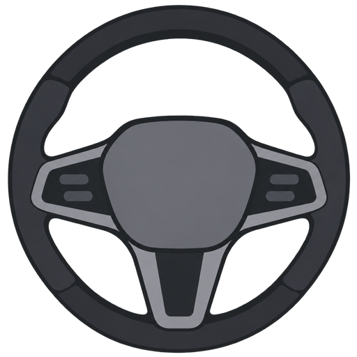
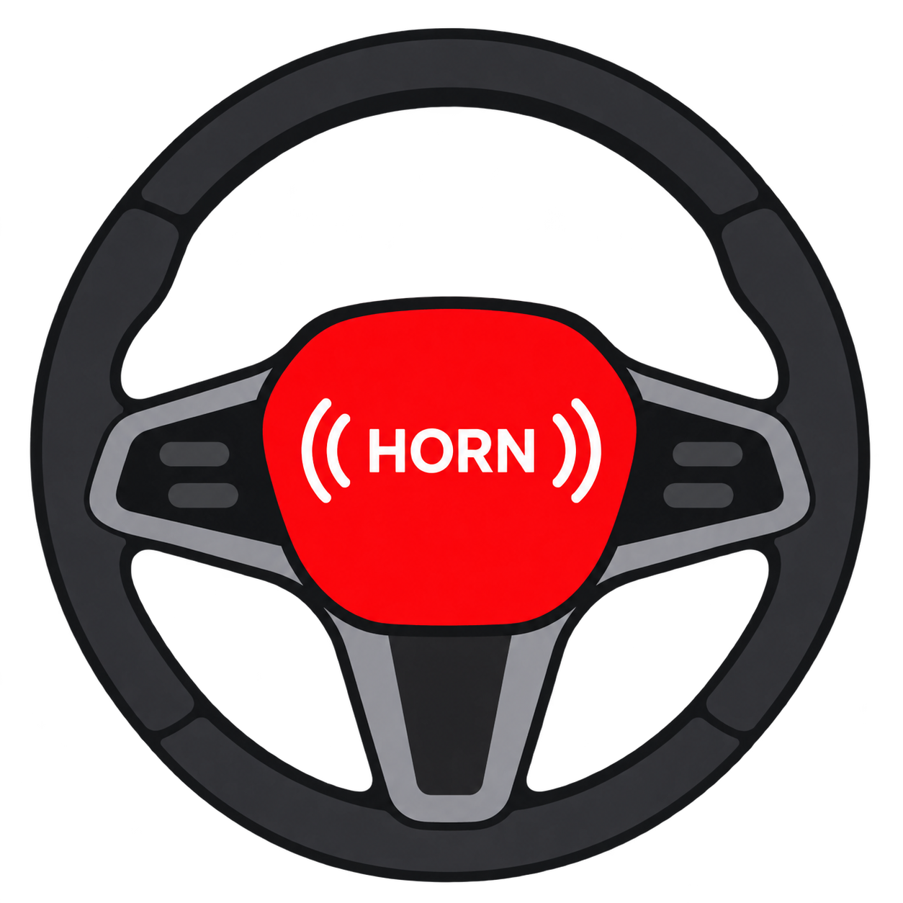

Remote Backup
Choose important recordings or entire drives and send the originals directly to your own Google account and storage.
Choose an upload connectionContinuous native 360° camera recording for your BMW.
Replay your BMW’s own cameras, protect moments with your horn, and keep important recordings in your own Google Drive.
NEW · 0.2.78 Remote Backup, Horn Protect & Drive playback
Protect them in the car. Back them up to your Google Drive. Replay them here.
Choose important recordings or entire drives and send the originals directly to your own Google account and storage.
Choose an upload connectionA horn press locks whole recording clips covering 30 seconds before and after the horn, including separate neighboring clips.
Automatic backup still requires a linked Google account and enabled car backup settings.
Connect Google Drive below to watch your backed-up BimmerVision recordings, with their recorded telemetry.
View backed-up recordingsOpen the recordings saved by your BMW. Bring the drive to this computer and choose your BimmerVision folder.
A quick walkthrough will help you connect and select your recording drive.
Local playback. Upload only when you choose Send to Remote Backup.Keep the drive in your BMW and connect directly to BimmerVision in iDrive.
This device must join the car’s own local Wi-Fi network—not the home Wi-Fi network your car may be connected to.
Use a current Chrome or Edge browser and allow local network access if asked. Pairing connects your browser directly to your car.
Open the car’s built-in player
Point your camera at the QR code in iDrive.
Connect your own Google account to view recordings backed up by BimmerVision. Recording video stays in your Drive and plays in this browser.
Continuing loads Google’s sign-in service. Google receives connection information when it loads. Then choose your own account. The viewer uses Google’s drive.file permission for BimmerVision-created recordings, not your full personal Drive.
Google Drive is disconnected.
View only. Locking and deleting cloud recordings are unavailable. Access lasts for this page session; reconnect if it expires. To upload, switch to USB recordings or connect to the car.
We recommend selected moments unless your car has a strong Wi-Fi connection. A two-minute recording averages about 300 MB; actual size varies.
The car uploads over Wi-Fi, including a phone’s Wi-Fi hotspot. It never uploads over the car’s cellular connection.
Link your Google account in iDrive and choose recordings in Remote Backup. Automatic backup requires enabled auto-upload settings and eligible Wi-Fi, recording, and driving conditions. Car uploads pause while a phone viewer is connected.
From the car’s web player, choose Remote Backup or a recording’s backup action. Keep the original car tab and the secure upload window open.
Upload using your phone’s own mobile data or other internet only after explicit routing confirmation. The browser chooses the connection: verify it uses your phone’s internet, not BMW hotspot internet. Mobile data charges may apply.
Give the car time. Vehicles often sleep around 5–15 minutes after locking, but timing varies and is not guaranteed. Keep selections conservative, especially on slower Wi-Fi.
Your queue stays saved. Unfinished car uploads resume when the car is awake and eligible Wi-Fi returns. Verified completed files are kept. If a phone upload stops, the car may restart an unfinished file when it takes over on Wi-Fi.
Your Google account, your storage. Backups use your own Drive capacity. BimmerVision does not provide cloud storage.
BimmerVision’s developers never see your recordings or recording metadata. They are read locally and are never uploaded to BimmerVision servers. Optional Remote Backup sends originals directly from your car or device to your own Google account and storage. Google sign-in and Drive requests go directly to Google after you choose to connect.
Online maps load OpenStreetMap tiles; those requests can reveal the map area you view. Your recording files are not sent to the map provider.
Choose a recording
Choose a drive to review its recordings, route and details.
Choose a drive to see its details.


Save one folder with the original recording, manifest and readable metadata. This is not an MP4 video.
Direct 4-camera preview download without cockpit telemetry overlays.
Name the side-by-side camera pair for this source frame to ensure views and exports are correctly oriented:
BimmerVision Web 0.2.78 · runs on your device
Update check pending.